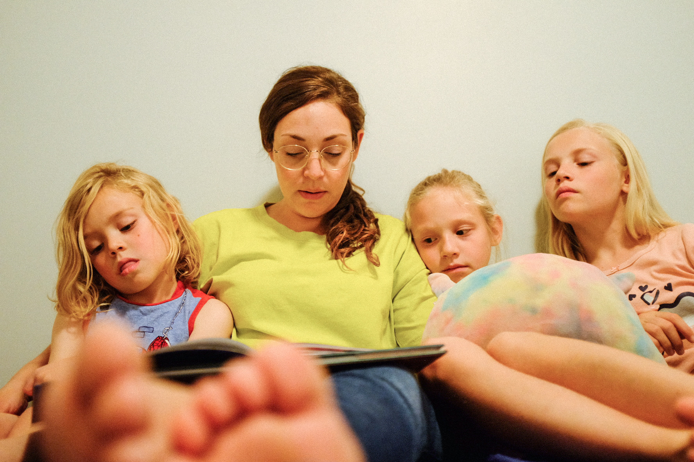
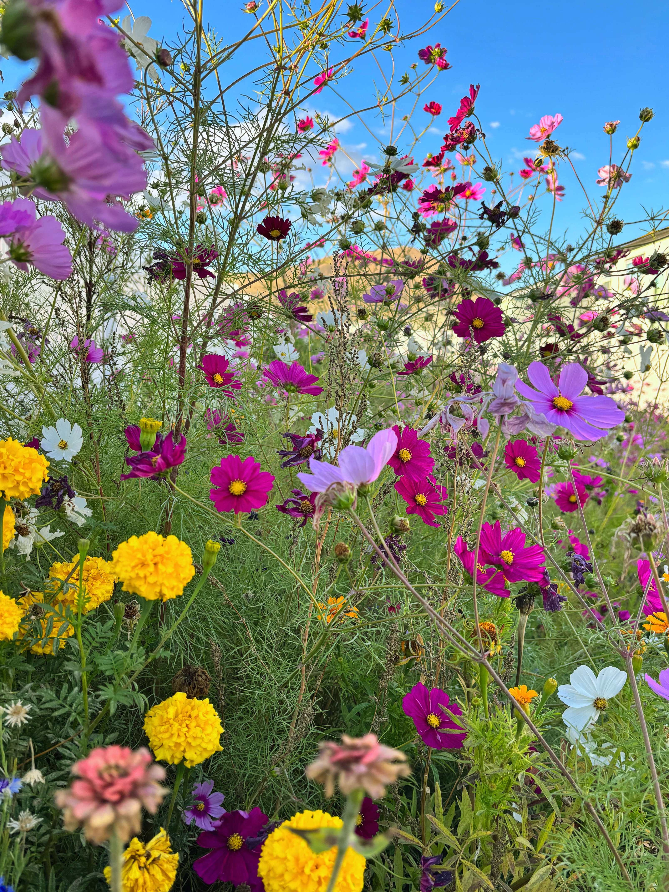
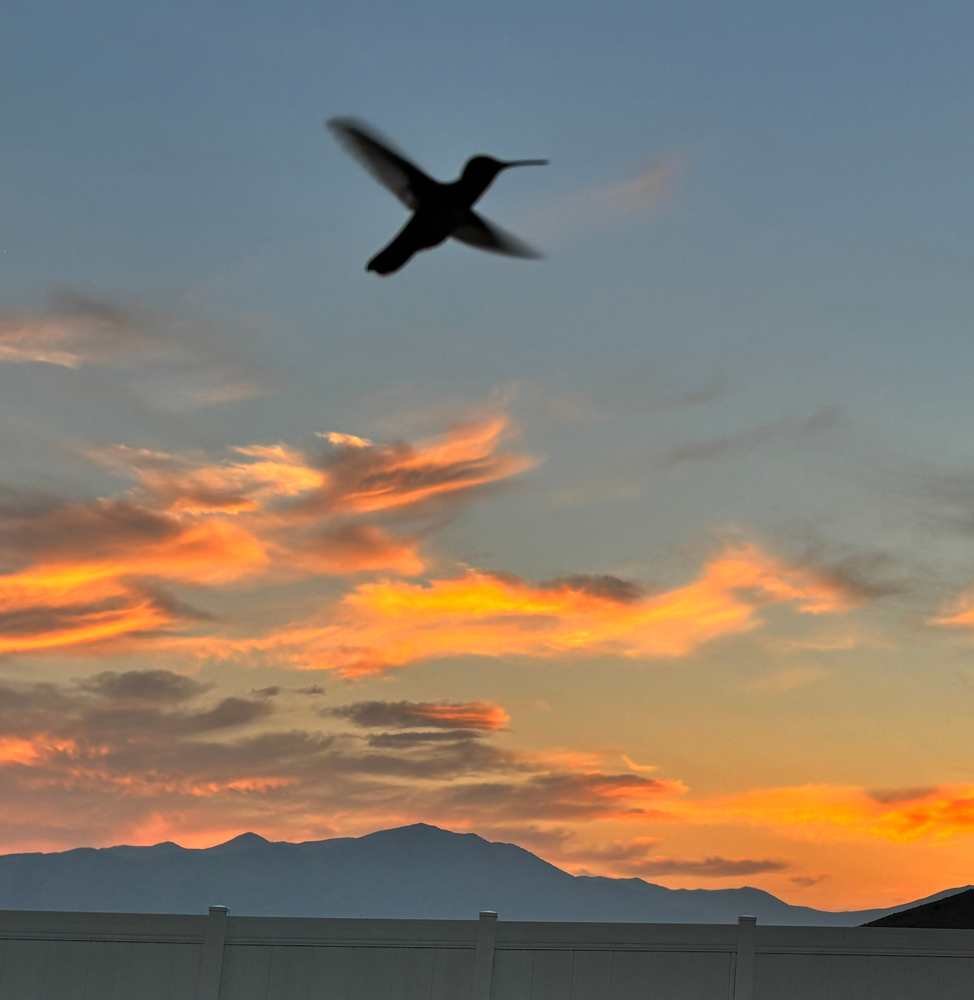

I'm a naturally quiet person with a curious mind and a love for learning how things work. I find joy in life's small moments—a butterfly, a beautiful sunset, or a job well done. While I often appreciate these simple pleasures alone, I also love opportunities to connect with family and friends, through exploring new places, working on a project together, or simply enjoying each other's company.
I am a lover of the arts—theater, music, reading, movies, and visual art. I enjoy seeing the worlds, stories, and ideas people create, as well as discovering how others think and live. Whether through travel, architecture, nature, or different ways of life, I'm continually amazed by the beauty and variety the world has to offer.
Much of my life has been centered around raising my family, creating traditions, and making everyday life run smoothly. These days, I'm making more room to explore my own interests, learn new skills, and see where those opportunities lead. I'm currently learning web development and looking forward to studying data analysis.
I enjoy finding practical solutions, learning from others, and discovering new things along the way. Most of all, I'm looking forward to continuing to discover who I am and sharing more of myself with my family and those around me.